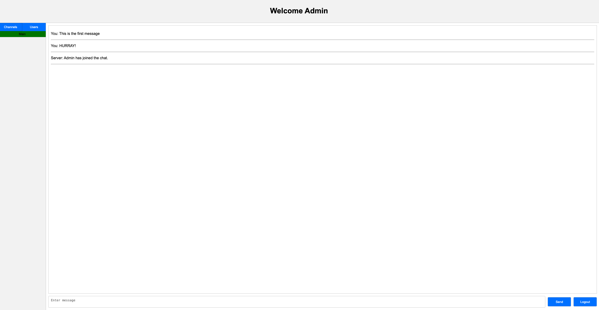

Chat App
This post will go through my experience making a Electron and Web Chat App. I will talk about what I used and difficulties I faced during the process. I will also talk about what I learned throughout the process.
Introduction
The reason why I wanted to make something involving networking is because I have never done it before and I was curious about how it worked. I was watching videos on youtube on how the internet works and routing and the OSI model and I thought it would be cool to make something that uses the internet to communicate. I have never made anything using HTTP requests or websockets before, so I decided to make a simple chat app to learn about both.
At first I only wanted to make a desktop application so I decided to use Electron along with HTML, CSS, and JavaScript. Along the way I realized that I could also make a web version of the app using the same codebase and only needed to change some things.
I decided to use Flask to handle the HTTP requests since I wanted to code the backend in Python. I used the standard websockets library for Python to handle the websockets. I used SQLite as my database since I didn't need anything too complex.
The Frontend
The frontend part of the app posed the most difficulties for me. Organizing the code and making sure everything worked together was a challenge. I had to learn about how to use websockets and how to send HTTP requests. I also had to make sure variables were being passed and shared correctly across the frontend.
Using Electron wasn't bad at all, everything was easy to setup and made sense. Creating functions to handle the websockets and HTTP requests was simple. I used the standard websockets library for JavaScript to handle the websockets. I used the fetch API to handle the HTTP requests. Overall the frontend development for the desktop app was pretty easy. However, I did run into issues when trying to convert the desktop app to a web app. This was because I was using some Electron specific functions to share variables that didn't work in the browser. I had to rewrite some of the code to get it to work.

The Backend
The backend was the easiest part of the app. I used Flask to handle the HTTP requests and the websockets library for Python to handle the websockets. Learning how to write RESTful APIs was interesting and I learned a lot about how to structure them. I also learned about the websocket handshake and how to send messages back and forth. Honestly the most difficult part about using HTTP and websockets was organizing the requests and making sure I understood what it was I was sending and receiving. I didn't add security to the app since it was just a small project and I didn't think it was necessary so I didn't have to worry about that.
The database was handled using SQLite. I didn't need anything too complex so I decided to use SQLite. I learned how to create tables and insert data into them. I also learned how to query the database and get the data I needed. I used a python library called sqlite3 to interact with the database. It was pretty easy to use and I didn't run into any issues.
The biggest time sink was bug fixing. Most bugs steamed from the fact that python was a dynamically typed language and when I wrote my code the first time I didn't account for this. So when I was getting an error I didn't even think that it could be because of a type error. I had to go back and add static typing to my code to make sure I wasn't passing the wrong type of data. This was a good learning experience and I'm glad I ran into this issue because I would hate to have this issue with a larger project.
Deploying
I used DigitalOcean to host my server. I had never done anything like this before so I was a bit nervous. I followed a tutorial on how to setup a server and how to deploy a Flask app. I was able to all my files into my cloud machine using rsync. I then installed all the dependencies and ran the app. I was able to access the app from my browser and everything worked as expected. I then used systemd to make sure the app was always running. Deploying the app was a great learning experience and also proved to be more challenging than I thought, but I'm glad I did it since it is a very useful skill to have.
Conclusion
This project was really fun for me to work on. I had a great time making my custom websockets and HTTP requests. I learned a lot about how the internet works and my JavaScript ability has also improved. What I think the most important thing I learned was how to deploy a server. This is a very useful skill to have and I'm glad I learned how to do it. I also learned how databases work and how to interact with them. I think this project was a great learning experience and I'm glad I did it.
You can find the code and desktop app version for this project on my Github here. You can connect to the app using the following link: Chat App. I didn't buy a domain name so you will have to use the IP address to connect to the app.
Thanks for reading.
Posted by: Aidan Vidal
Posted on: July 30, 2024